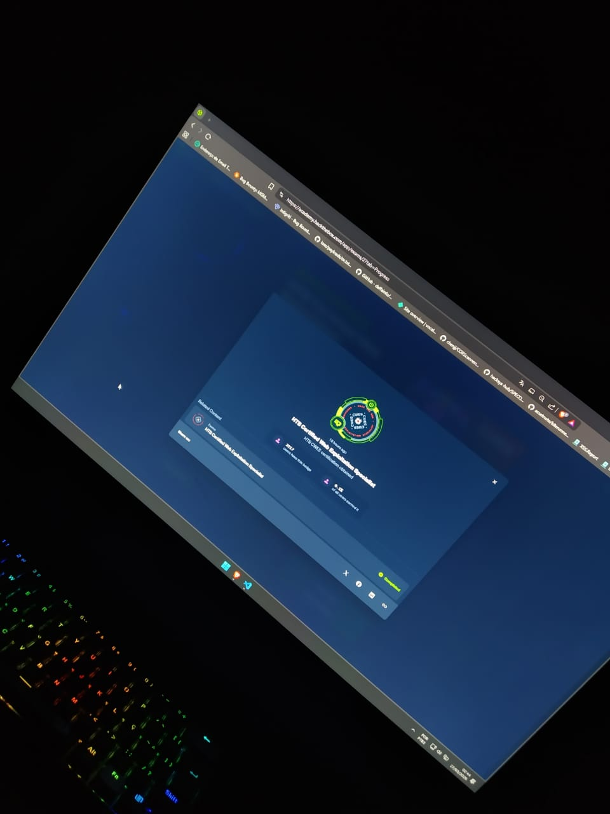
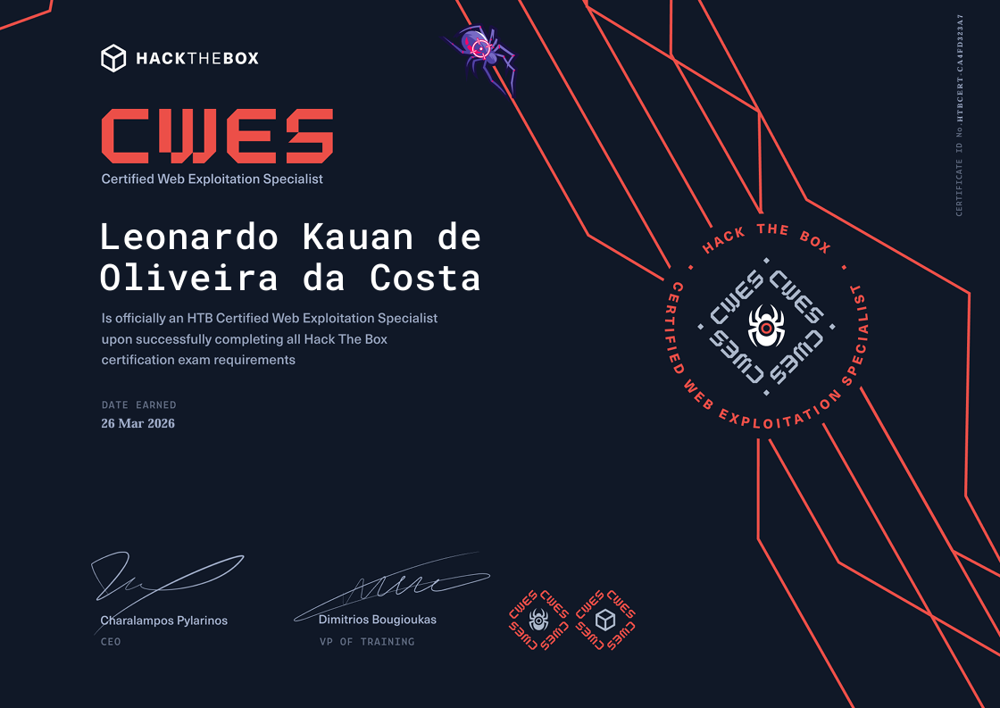
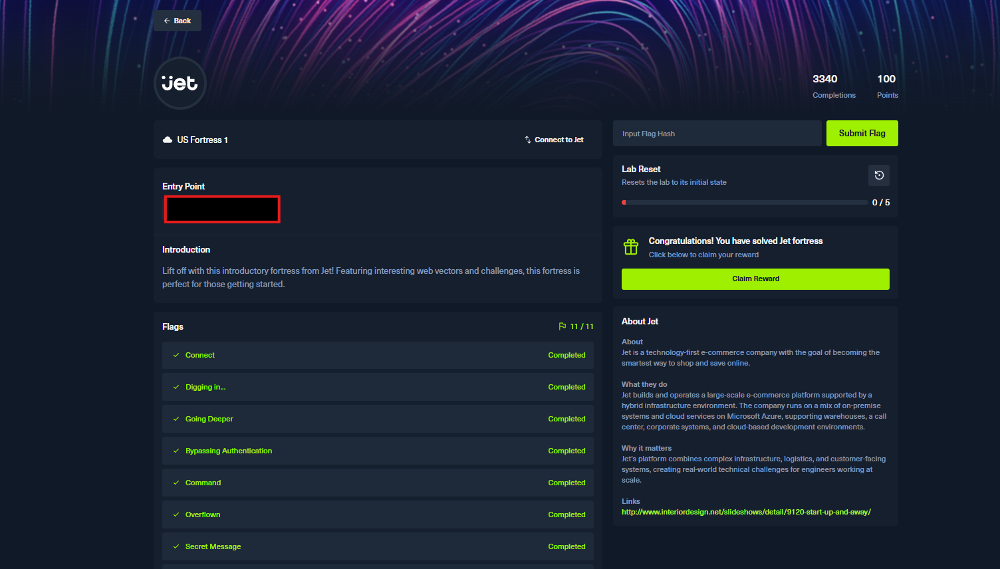
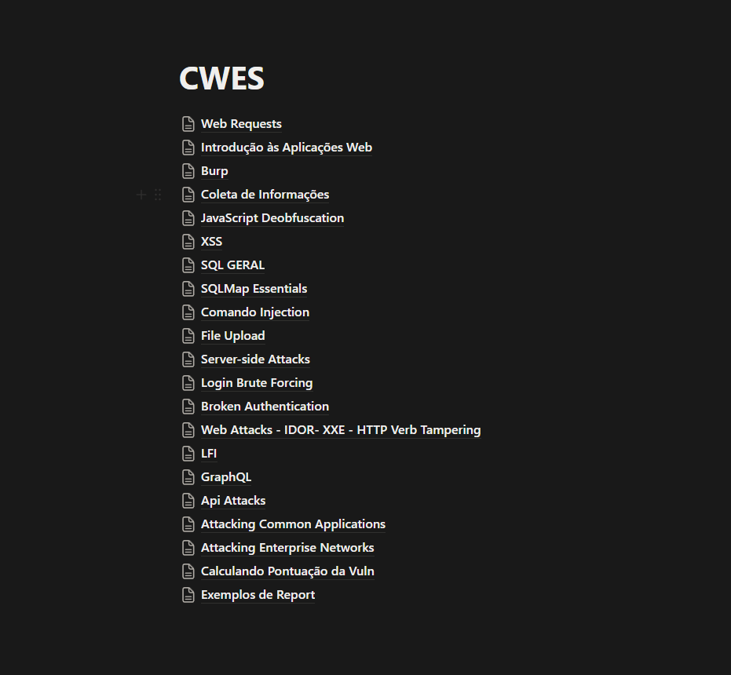

Olá pessoal, hoje venho mostra a vocês sobre como me preparei e passei na certificação CWES (Certified Web Exploitation Specialist). Essa foi a minha primeira certificação prática e realmente gostei bastante do caminho até a aprovação.

Contexto
A CWES (Web Exploitation Specialist), é uma certificação prática voltada para hacking/pentesting de aplicações web para profissionais. Recentemente, tem sido muito reconhecido no área pelos 20 tópicos/módulos que cobre:
- Web Requests
- Introduction to Web Applications
- Using Web Proxies (Burp Suite, OWASP ZAP)
- Information Gathering - Web Edition
- Attacking Web Applications with Ffuf (Enumeration and fuzzing with Ffuf)
- javaScript Deobfuscation
- Cross-Site Scripting (XSS)
- SQL Injection Fundamentals
- SQLMap Essentials (Advanced use of SQLMap)
- Command Injections
- File Upload Attacks
- Server-side Attacks (SSRF, SSTI, SSI)
- Login Brute Forcing (Hydra, Medusa)
- Broken Authentication
- Web Attacks (HTTP Verb Tampering, IDOR, XXE)
- File Inclusion
- Session Security (Hijacking, fixation, CSRF, XSS, open redirect)
- Web Service & API Attacks
- Hacking WordPress
- Bug Bounty Hunting Process (Methodology and reporting)
Todos os módulos oferecido são bem completos, pois cada um deles tem Laboratórios para você testar o que você aprendeu durante o módulo e no final ainda tem o Skills Assessments que funciona como um CTF específico para aquele módulo.

A prova
Você pode começar a prova quando quiser após ter completado 100% do path Web Penetration Tester, o exame em si não é supervisionado, você pode fazer a prova livremente sem alguém te supervisionando, você irá receber uma VPN e um painel onde você pode enviar as flags obtidas ao longo da prova.

A prova consiste em cinco sites que você deve comprometer completamente, partindo de usuário não autenticado até administrador tanto na web quanto no servidor. Você terá sete dias para obter pelo menos oito das dez bandeiras e escrever um relatório sobre tudo o que você descobriu. lembrando que todo o conteúdo está em inglês inclusive o relatório.
Minha Experiência
A prova em si é bem divertida e desafiadora, no começo da um certo medo de começar mas depois passa.
Para quem quer fazer o exame eu aconselho sempre manter uma mentalidade positiva e focada, muita das vezes eu me encontrava em um caminho sem saída e sem ideia do que ser feito,
e rever minhas anotações superficialmente me ajudou a destravar minha mente.
Levei cerca de três dias e meio pra terminar a prova e sempre mantendo uma frequência de 8 horas por dia, o relátório foi bem rápido pois levou apenas 1 dia e meio pra escrever ele bem detalhado.
Assim que enviei o relatório, o tempo da prova foi pausado, e depois de 7 dias recebi a notificação que tinha sido aprovado no exame.

Dicas
Primeimente: Anotação é a parte mais importante de toda essa jornada, faça anotações detalhadas de cada assunto dos módulos, escreva elas de uma forma que você irá entender depois.
Uma das coisa que eu gostava de fazer era escrever minis writeups do Skills Assessments de cada módulo, isso me ajudava a entender melhor como cada parte funcionava e porque funcionava,
uma das coisa que fazim também era gravar videos dos labs pra entender a onde eu estava travando e o que precisava melhorar, isso me ajudava a destravar a mente.
Outra coisa imporante a se fazer é os labs do Fortress, eles simulam muito bem um cenário real e o que pode cair na prova, recomendo fazer o JET de início, ja que ele simula muito bem um cenário real.

Outra alternativa que me ajudou um pouco foi fazer o módulo Attacking Enterprise Networks, ele aborda muito bem a parte de exploração web e ja te deixa preparado para a prova.
E depois de terminar o path completo refiz minhas anotações de uma forma bem organizada e facil de ser consultavél, isso me deu bastente eficiência durante a prova.

Relatório
Sobre o relatório, eles fornecem um modelo que você pode usar, porém eu não recomendo pois você tem que editar tudo na mão e é meio chato.
Para isso temos Sysreptor, ele server perfeitamente para escrever o relatório por conta que ele ja tem um modelo pronto da CWES que você pode pegar aqui: Modelos Hack The box.
Para o seu relatório, você deve pensar que ele tem que ser totalmente reproduvizel, tanto manual quando por ferramentas. Sempre que você descobrir algo novo escreve um simples resumo de como chegou até la, e no report final deixe isso bem datalhadamente, sempre lembre que o report deve ser totalmenente reproduzivel.
Conclusão
Essa foi a minha primeira certificação prática e achei ela realmente muito divertida e desafiadora, se você ja tem uma boa base de pentest web a prova será bem mais fácil. É uma certificação que vale muito a pena por conta do peso que o HTB tem no mercado, e também pelo conteúdo ensinado durante o trajeto.
Se você pretende fazer ela, aconselho que foque bastante no conteúdo ensinado, foi uma prova que me tirou algumas noites de sono porém aprendi bastante ao longo desse trajeto, e uma das melhores sensações além de receber o certificado é receber o feeadback que é passado no final sobre tudo o que você fez.
Good lucky :)
by Leonardo Kauan - krnl